name: big-title count: false class: title-slide, slide-columns, hide-counter .left-column[ # Workshop om it-genbrug og reparation ## ¬ªKom og bliv klogere p√• klimaproblematikkerne ved hardwareproduktionen og hvad du selv kan gøre for at skabe en ny retning¬´ 1. september 2021, PROSA UNG ] .right-column[ #### Benjamin Balder Bach Slides | [https://github.com/benjaoming/prosa-workshop-20210901/](https://github.com/benjaoming/prosa-workshop-20210901/) ---------|------------------------------------------------------------- Twitter | [@benjaoming](https://twitter.com/benjaoming) Homepage | [https://overtag.dk](https://overtag.dk) Associations | [Fair Allocation of Infotech Resources (FAIR)](https://www.fairdanmark.dk/en/), [data.coop](https://data.coop/), [Django Danmark](https://www.django-denmark.org/), Medlem af PROSA/Offentlig (Udviklings- og Forenklingsstyrelsen, DevOps) ] ??? Fort√¶l lidt om dig selv Jeg vil rigtig gerne give en introduktion og motivation for at arbejde med genbrug og reparation af it-udstyr. Og is√¶r for it-folk. Det er min opfattelse, at der b√•de er brug for politisk vilje og praktisk erfaring og handekraft for at flytte p√• disse omr√•der. --- class: fancy-headline-slide, fancy-headline-slide1, slide-columns, hide-counter .left-column[ # Program ] .right-column[ <pre> 17:00 Introduktion (10 min) 17:10 Break-out sessions med intro 17:20 Teoretisk Miljøaftryk: Hvorfor genbruge og levetidsforl√¶nge? 17:45 Praktisk genbrug: FAIR Danmark mm. 18:00 Besøg: Ji≈ô√≠ fra Paranda.ee 18:15 Besøg: Janet fra The Restart Project 18:30 Afslutning, opfølgning og uformel chat </pre> ] ??? Bem√¶rk at vi ikke har nogen pauser, men vi har h√¶ng-ud bagefter --- class: fancy-headline-slide, fancy-headline-slide2, slide-columns, hide-counter .left-column[ # Introduktion ] .right-column[ # Denne talk er n√¶sten*) for alle \*) Lang vej til, at alle ønsker at genbruge og reparere deres it-udstyr ] ??? Vi skal gøre reparation og genbrug popul√¶rt. S√• det nytter ikke noget, at vi pakker det for meget ind i mystik og anser os selv som nogle s√¶rlige nørder. Reparation plejede at v√¶re en form for demokratisk ret: Man ejede indsigt og evne til at reparere. Det skal vi have tilbage. Vi plejede ogs√• at have møbler, som skulle holde hele livet og kunne gives videre i arv. Men vi kan have forskellige tilgange til genbrug og reparation, s√• lad os bare prøve at komme lidt ind p√• det. Someone interested in reusing just a couple of computers Other people doing reuse already Someone working at a company that replaces equipment All too often I meet people who didn't have time to re-purpose equipment, who are saving stuff they don't need, letting good equipment slide into the dumpster. This is especially a problem in the professional sector, where few often very few people are left with the responsibility of a lot of equipment. Details are important, but don't be scared of details. If you like practical work and troubleshooting, then reusing ICT equipment can have a lot of technical, logistical and human factors that are wonderful and rewarding to work with. But we should be taking re-use to a new level and leverage our Open Source ideals such that the processes, logistics and ultimately requirements of certification etc. are not obstacles, but opportunities. --- class: fancy-headline-slide, fancy-headline-slide2, slide-columns, hide-counter .left-column[ # Introduktion ] .right-column[ # Hvad laver PROSA lige nu? * Arbejdsgruppe om Grøn it **i PROSA** * Medlem af Right to Repair Europe * Arrangementer om Grøn It (som dette) * Green_IT (Midtvejsmøde 13. november) <img src="green_it.png" style="width: 100%; overflow: hidden; border: 0; margin: 20px 0;"> ] --- class: fancy-headline-slide, fancy-headline-slide2, slide-columns, hide-counter .left-column[ # Introduktion ] .right-column[ # Hvorfor? ] ??? ICT Reuse Why? Because it's good for the environment and people to be using our ressources as wisely as posslbe --- class: fancy-headline-slide, fancy-headline-slide2, slide-columns, hide-counter .left-column[ # Introduktion ] .right-column[ # Hvordan? ] ??? ICT Reuse How? You take a computer from somewhere that it isn't used and bring it to somewhere it will be used. --- class: fancy-headline-slide, fancy-headline-slide2, slide-columns, hide-counter .left-column[ # Introduktion ] .right-column[ # Breakout rum (10 minutter) * 3-4 i hvert rum * Introduktion, giv alle 1 minut - Hvorfor er I kommet med? * Kan I sammen give 3 gode eksempler p√• genbrug reparation fra jeres eget liv? * Hvad synes I er 3 store udfordringer, som vi skal løse? * Feedback her: [https://pad.data.coop/ttI5qMhgR-S030hYgXtTSQ?both](https://pad.data.coop/ttI5qMhgR-S030hYgXtTSQ?both) (vi n√•r ikke at gennemg√• det, men vi kan jo kigge p√• hinandens svar bagefter, hvis der er tid) ] ??? Hvad er breakout rooms? Teams-chat fungerer ikke, men I m√• meget gerne skrive feedback fra jeres sessions i linket. --- class: left, middle, section-title # Miljøaftryk --- class: left, middle, section-title # <strike>Miljø</strike>aftryk ??? Vi starter "blødt" eller kvalitativt. Der findes nemlig ikke s√• mange gode kvantitative bud. --- class: fancy-headline-slide, slide-columns, hide-counter .left-column[ # Miljøaftryk ] .right-column[ # Hvordan bliver computere født? * Resourcer fra naturen * Menneskeligt arbejde * (Økonomien) ] ??? It-udstyr bliver ikke skabt ud af det bl√• Enormt miljøaftryk Menneskelige omkostninger: D√•rlige arbejdsmiljøer, d√•rlige lønninger, arbejdstider, minesektoren S√• nøglespm er: Hvordan forl√¶nger vi levetiden og reducerer produktionen? Svaret er kompliceret, men vi skal blive bedre til at genbruge og reparere Først skal vi dog lige dykke lidt ned i at forst√• aftrykket.. miljøaftrykket i dette tilf√¶lde. --- class: fancy-headline-slide, slide-columns, hide-counter .left-column[ # Miljøaftryk ] .right-column[ 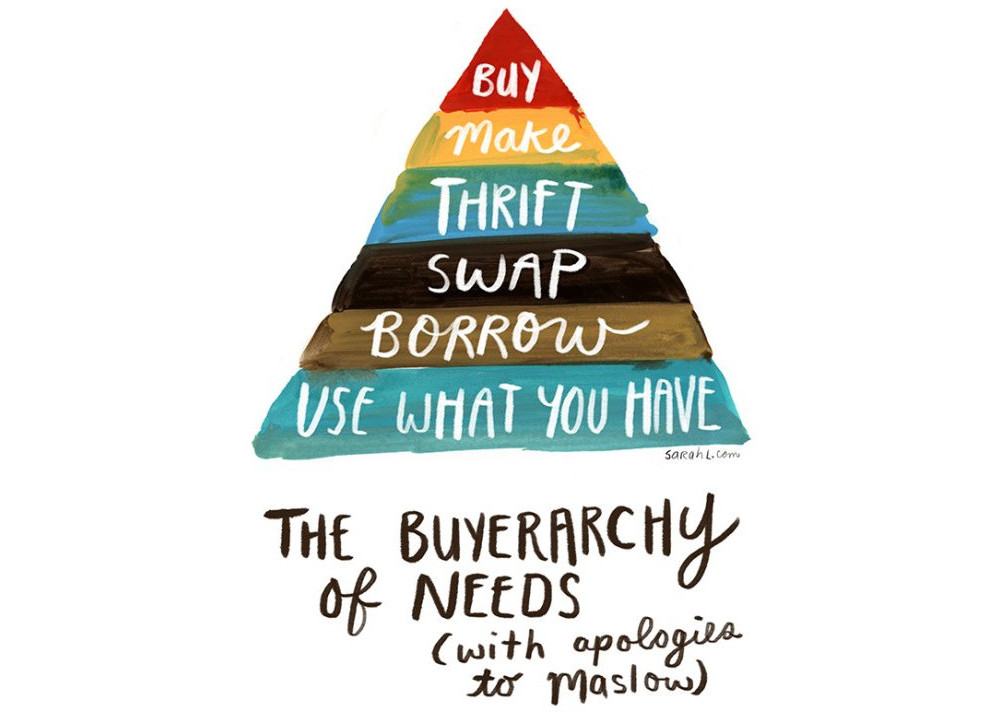 ] ??? Mikroøkonomisk perspektiv er nemmere Overs√¶ttelsen til makroøkonomisk perspektiv er sv√¶r. Hvad er i vejen for at man makroøkonomisk kan addressere lagene i pyramiden? ...for samfundet - offentlige sektor, virksomheder --- class: fancy-headline-slide, slide-columns, hide-counter .left-column[ # Miljøaftryk ] .right-column[ ## The most amazing achievement of the computer software industry is its continuing cancellation of the steady and staggering gains made by the computer hardware industry. ### Henry Petroski ] ??? But there is also a really complicated macro-economic aspect of reuse and life-span of hardware. Read the quote The challenge posed here is that the essential value of technological gains are actually cancelled out. Let's try to understand a bit more of this. --- class: fancy-headline-slide, slide-columns, hide-counter .left-column[ # Miljøaftryk ] .right-column[ # Induceret efterspørgsel ## Større udbud => Øget forbrug ] ??? In basic economic theory, we see that there is a relation between supply and demand that isn't just about price creation in a market. Consider the good old example of roads. Creating bigger or more roads leads to more traffic, and ultimately we don't get rid of congestion. --- class: fancy-headline-slide, slide-columns, hide-counter .left-column[ # Miljøaftryk ] .right-column[ # Jevon's Paradoks ## Mere effektivt eller tilg√¶ngeligt/billigt kul => <br>Større forbrug ] ??? In this old example about coal efficiency and availability, we saw that even though the coals got more efficient due to technological advancement, the usage didn't stall or decrease. It increased. --- class: fancy-headline-slide, slide-columns, hide-counter .left-column[ # Miljøaftryk ] .right-column[ # Wirth's Law ## Software is getting slower more rapidly than hardware is becoming faster. # Gates' Law ## The speed of software halves every 18 months ] --- class: fancy-headline-slide, slide-columns, hide-counter .left-column[ # Miljøaftryk ] .right-column[ <img alt="Moore's Law" src="moores_law.png" style="border:0"> ] ??? In this old example about coal efficiency and availability, we saw that even though the coals got more efficient due to technological advancement, the usage didn't stall or decrease. It increased. --- class: fancy-headline-slide, slide-columns, hide-counter .left-column[ # Miljøaftryk ] .right-column2[ 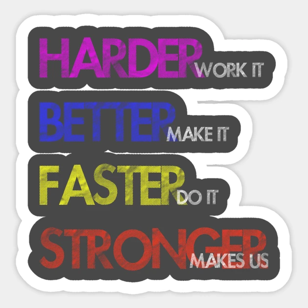 ] ??? De økonomiske hjul bliver ved med at dreje rundt, s√• det er reelt set kun konkurrence-dygtig genbrug eller regulering, der kan standse udviklingen. --- class: fancy-headline-slide, slide-columns, hide-counter .left-column[ # Miljøaftryk ] .right-column[  (Berlingske: ¬ªPresset vokser: CO2-udledning fra datacentre overg√•r flybranchen før coronakrisen. Strømforbruget stiger hvert √•r med seks procent i datacentrene¬´) ] ??? Tweetet handler om, at Berlingske har skrevet om, at datacentre øger deres andel af global CO2-udledning forventes at stige 6% hvert √•r. --- class: fancy-headline-slide, slide-columns, hide-counter .left-column[ # Miljøaftryk ] .right-column[ # Vores fokus: Reparation og genbrug af hardware ## ‚↠Energiforbrug ] ??? Vi kigger ikke engang p√• energi-udledningen i brugsfasen. Vi interesserer os for CO2-udledning og energiforbrug i PRODUKTIONEN. --- class: fancy-headline-slide, slide-columns, hide-counter .left-column[ # Miljøaftryk ] .right-column[  ] ??? Et meget direkte eksempel p√•, at vi ikke f√•r noget at vide fra producenterne. En sponseret reklame i Computerworld (2016) https://www.computerworld.com/article/3133624/the-carbon-footprint-of-your-tech-equipment.html --- class: fancy-headline-slide, slide-columns, hide-counter .left-column[ # Miljøaftryk ] .right-column[  ] ??? Her er et andet eksempel. Der g√•r 240L appelsinjuice til at lave en laptop. S√• ved vi i hvert fald, at udeledningen er større... https://i.dell.com/sites/content/corporate/corp-comm/en/Documents/dell-laptop-carbon-footprint-whitepaper.pdf --- class: fancy-headline-slide, slide-columns, hide-counter .left-column[ # Miljøaftryk ] .right-column[ # Udledninger i produktionsfasen * Minedrift, r√•materialer * Chip-industri, printplader, harddiske, strømforsyninger * "Computer-fabrikken": Ikke s√¶rligt meget * Relateret udledning fra industriens aktivitet: Transport, konferencer 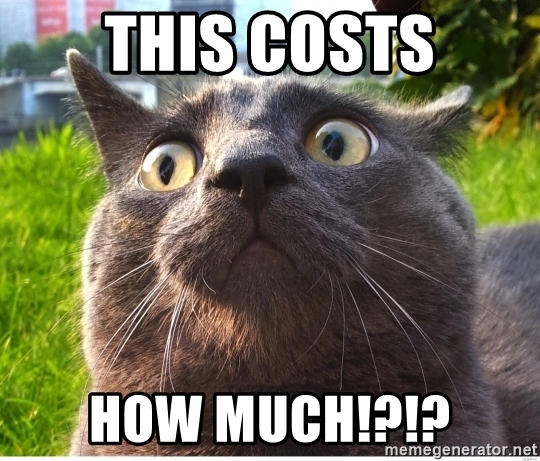 ] ??? Vi kigger ikke engang p√• energi-udledningen i brugsfasen. Vi interesserer os for CO2-udledning og energiforbrug i PRODUKTIONEN. Generelt set er alle enige i, at udledningen fra produktionen er større end fra forbrugsfasen. Dette forhold vil vi gerne nedbringe! Og Kina skal selvfølgelig holde op med at forbr√¶nde kul, men det er ikke vores problem --- class: fancy-headline-slide, slide-columns, hide-counter .left-column[ # Miljøaftryk ] .right-column[ # Studie fra 2009: Det er sindssygt kompliceret ### [Carbon Footprinting Upstream Supply Chain for Electronics Manufacturing and Computer Services](https://www.researchgate.net/publication/232655355_Carbon_footprinting_upstream_supply_chain_for_electronics_manufacturing_and_computer_services) 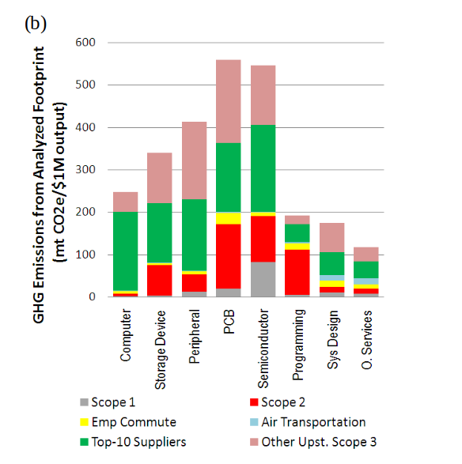 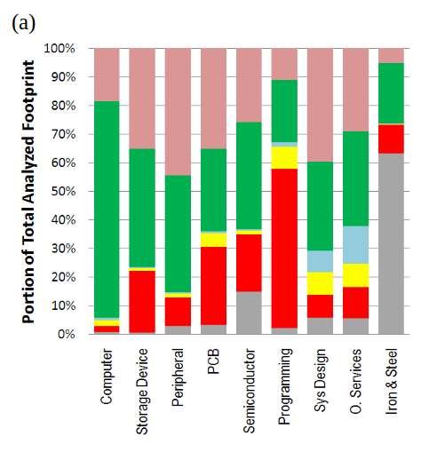 <div style="font-size: 50%">Fig. 1. Carbon footprint profiles for 8 electronics manufacturing and computer services sectors. The sectors listed in the x-axis are: ‚ÄúComputer‚Äù = computer manufacturing; ‚ÄúStorage Device‚Äù = computer storage device manufacturing; ‚ÄúPeripheral‚Äù = computer terminals and other computer peripheral equipment manufacturing; ‚ÄúPCB‚Äù = bare printed circuit board manufacturing; ‚ÄúSemiconductor‚Äù = semiconductor and related device manufacturing; ‚ÄúProgramming‚Äù = custom computer programming services; ‚ÄúSys Design‚Äù = computer systems design services; ‚ÄúO. Services‚Äù = other computer related services, including facilities management; ‚ÄúIron & Steel‚Äù = iron and steel mills. In (b), GHG emissions are expressed in metric tons of CO2 equivalence (mt CO2e) per $1 million of output from each sector. Emissions from iron & steel are greater than 3,500 mt CO2e; and therefore is not shown to maintain legibility of (b). </div> ] ??? Produktionsk√¶den/forsyningsk√¶den for elektronik er meget vel den mest komplicerede k√¶de Outputs: Alts√• noget ala metriske tons CO2 pr $ million Alts√• noget i stil med $1.000.000 dollars af computere (200 computere?) = 200 tons CO2 = (100 gange til New York t/r). 1-2-3 tons per computer? Tjah. --- class: fancy-headline-slide, slide-columns, hide-counter .left-column[ # Miljøaftryk ] .right-column[ <div style="height: 100%; width: 100; background: url(university_edinburgh.png); background-repeat: no-repeat; overflow: hidden; margin: 0;"><br></div> ] ??? https://www.ed.ac.uk/files/atoms/files/pc-carbonfootprints-jh-ecci2.pdf --- class: fancy-headline-slide, slide-columns, hide-counter .left-column[ # Miljøaftryk ] .right-column[ 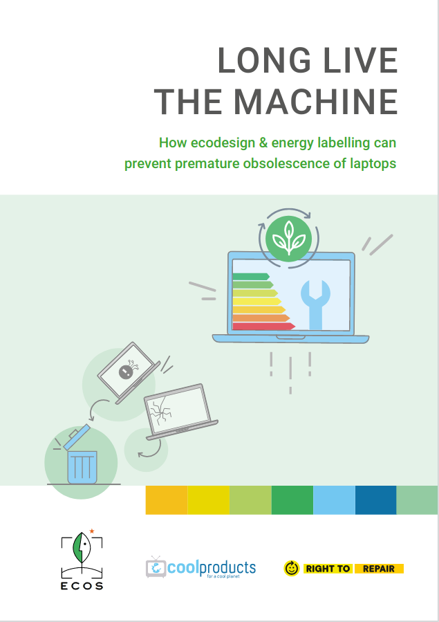 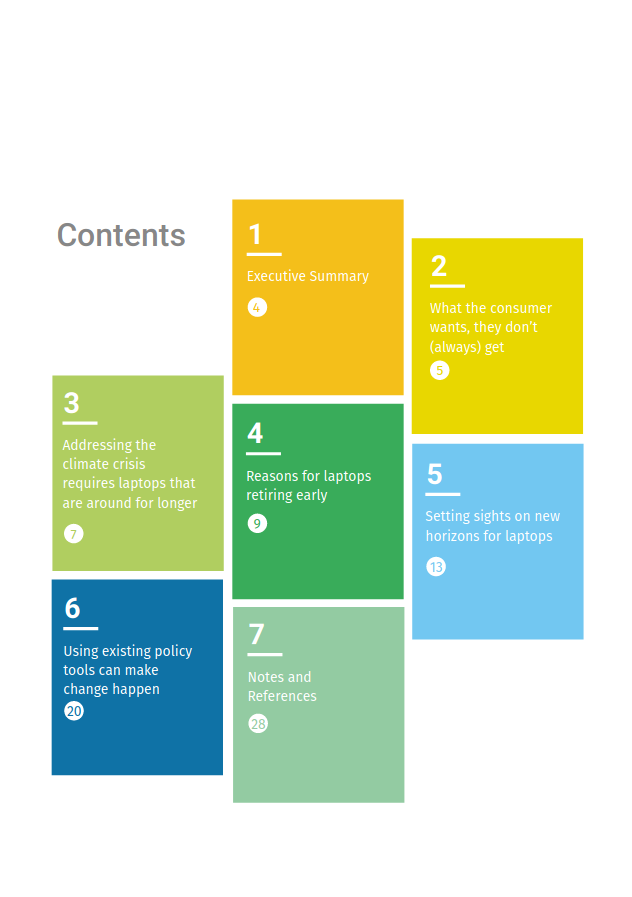 ] ??? Rapport fra 2020 (og politik) konkluderer, at 52% af computeres aftryk kommer fra produktionen. --- class: fancy-headline-slide, slide-columns, hide-counter .left-column[ # Miljøaftryk ] .right-column[ 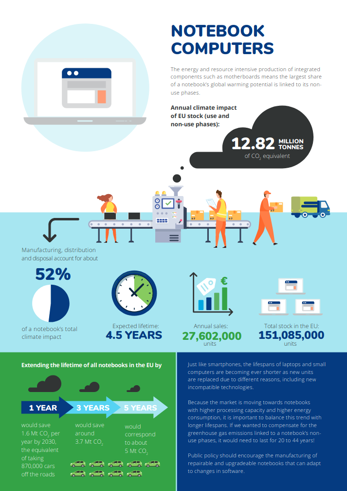 ] ??? Samme organisationer (bl.a. Coolproducts og Right to Repair) konkluderer, at hvis vi kan forl√¶nge EUs computeres levetid med 1, svarer det til at pille knap 1 mio. biler ud af trafikken. Ift. vaskemaskiner og støvsugere, er det meget meget meget, cirka 10x mere, virkningsfuldt at forl√¶nge levetiden p√• smartphones og computere med 1 √•r. KONKLUSION: Alts√• det har en ret stor effekt, at vi øger levetiden for it-udstyr, og is√¶r for den andel af udstyret, hvor potentialet er størst. --- class: fancy-headline-slide, slide-columns, hide-counter .left-column[ # Miljøaftryk vs. V√¶rdiskabelse ] .right-column[ # Det essentielle fodaftryk Man kan slet ikke producere hardware uden et miljøaftryk! Derfor er det interessante teoretiske spørgsm√•l: <pre style="margin-top: 40px"> Ressourceforbrug (forurening mv) af produktion og drift -------------------------------- = Essentielt miljøaftryk V√¶rdiskabelse </pre> <em>Disclaimer: Det er AFAIK kun mig, der snakker om dette.</em> ] --- class: fancy-headline-slide, slide-columns, hide-counter .left-column[ # Miljøaftryk vs. V√¶rdiskabelse ] .right-column[ # ...bliver et optimerings-problem 1. Optimere levetid + 1. Optimere v√¶rdi 1. = Bedre essentielt miljøaftryk ] ??? 2 polariserede eksempler En virksomhed køber for mange computere og nogle bliver aldrig brugt vs. Et barn f√•r en computer og kommer ud af fattigdom Andre eksempler: Hvad er aftrykket p√• et superdyrt komfur, som bliver brugt til at br√¶nde en omelet p√•? In the rest of the talk, we will go through firstly the reuse process, and what that means practically and how we setup operations at FAIR Then we'll talk about why it's great to find someone who really needs a computer, and how a civil society platform is great at both sourcing hardware, people, skills and sustain new educational infrastructures for hardware delivery, training and maintenance based on Open Source. --- class: left, middle, section-title # Praktisk genbrug og reparation ??? Vi bruger resten af tiden... dvs XXX min --- class: fancy-headline-slide, fancy-headline-slide3 slide-columns, hide-counter .left-column[ # Praktisk ] .right-column[ # Hvor skal vi kigge efter løsninger? Markedsbaserede løsninger findes: * Leasing üòñ * Kommercielt genbrug ü•≤ Mere sp√¶ndende løsninger: * **Socialøkonomisk genbrug og reparation üéâ** * Right to Repair üõ†Ô∏è * Regulering og politik üìö ] ??? Incitamenter i leasing og kommercielt genbrug er tvivlsomme, n√•r man t√¶nker p√• levetidsforl√¶ngelse --- class: fancy-headline-slide, fancy-headline-slide3 slide-columns, hide-counter .left-column[ # Praktisk<br>Win-win ] .right-column[ ## Hvis den er brugelig, er den genbrugelig ## Hvis den er ubrugelig ### ...er den m√•ske stadig genbrugelig! ## Hvem kan det komme til gode? * Virksomheden selv * Nogle andre? (=socialt ansvar) ] ??? T√¶nk p√•, at din virksomheds strategi kan v√¶re, at man ikke køber en hel ny park af computere, fordi nogle g√•r i stykker. Computere, der g√•r i stykker, kan v√¶re reservedele til eksisterende computere eller bruges til at opgradere. --- class: fancy-headline-slide, fancy-headline-slide3 slide-columns, hide-counter .left-column[ # Praktisk<br>1 computer ] .right-column[ # En computer skal genbruges * Slet al data med live USB, f.eks. [DBAN (Darik's Boot and Nuke)](https://dban.org/) * Prøv at bruge den i nogle dage? * Install√©r et operativsystem (Linux?) * F√• computeren til at se p√¶n ud ] --- class: fancy-headline-slide, fancy-headline-slide3 slide-columns, hide-counter .left-column[ # Praktisk<br>1 computer ] .right-column[ # Hvad gør man med den? ## Giv den v√¶k * Hjemløse projekter * Flygtninge projekter * [Hack Your Future](https://www.hackyourfuture.dk/) * [Together we PUSH](https://www.facebook.com/togetherWEPUSH/about/) ## S√¶lg den * Til en ven * Giv en personlig garanti! ] --- class: fancy-headline-slide, fancy-headline-slide3 slide-columns, hide-counter .left-column[ # Praktisk<br>1 computer ] .right-column[ # Undg√•: Skuffen og loftet ] --- class: fancy-headline-slide, fancy-headline-slide3 slide-columns, hide-counter .left-column[ # Praktisk<br>1 computer ] .right-column[ # Computeren virker ikke *) * L√¶g den i en skuffe :) * Udtag reservedelene * Strømforsyning * RAM * HDD/SSD Tip: Mark√©r alting! En løs harddisk kan se "defekt" ud, skriv en note "testet, virker OK" - husk dato "testet virker OK 23. december 2020" *) Fungerer ikke: Der er ingen direkte genbrug ] ??? Assuming you cannot fix it --- class: fancy-headline-slide, fancy-headline-slide3 slide-columns, hide-counter .left-column[ # Praktisk<br>fra 1 til mange ] .right-column[ # Systematisering af genbrug ## Logistik og genbrugs-praksis ## Automatisering og software ## V√¶rksted ] ??? Other aspects that we won't cover now: * Where to find computers that can be reused? (a communication effort) * How to report? TODO: * How much time do you have for each item? * Writing software to automate the process ID marks, anti-theft, locks on casings (image exists) --- class: fancy-headline-slide, fancy-headline-slide3 slide-columns, hide-counter .left-column[ # Praktisk<br>fra 1 til mange ] .right-column[ # Om at genbruge masser af udstyr ## FAIR = FAIR Allocation of Infotech Resources ## Statistik, Denmark+Norway siden 2010 * 16.668 computere behandlet, 13.228 genbrugt * 7.247 sk√¶rme behandlet, 5.540 genbrugt ## Infrastruktur * Large-Scale Computer Reuse Suite. https://lcrs.fairdanmark.dk/ * Stregkoder, databaser og tests med LCRS * Lager og forsendelse - Computere/laptops virker i gns. 5 √•r mere p√• skoler i Malawi. ] --- class: fancy-headline-slide, fancy-headline-slide3, no-border-img, slide-columns, hide-counter .left-column[ # Praktisk<br>fra 1 til mange ] .right-column[  ] --- class: fancy-headline-slide, fancy-headline-slide3, no-border-img, slide-columns, hide-counter .left-column[ # Praktisk<br>fra 1 til mange ] .right-column[ 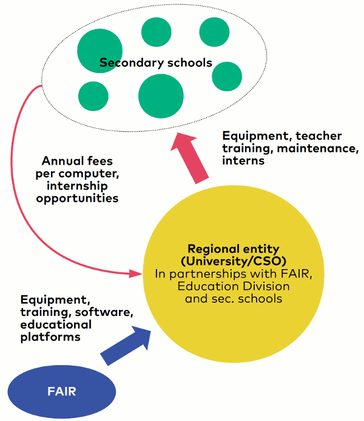 ] ??? Det vigtige her: Observ√©r at udstyret kommer et andet sted hen. Her er Right to Repair KRITISK Vores indsats med reparation kan komme andre til gode: Deling af praksis og instruktioner kan bruges af andre, hvor reparation er meget mere samfunds-understøttende. --- class: fancy-headline-slide, fancy-headline-slide3, no-border-img, slide-columns, hide-counter .left-column[ # Praktisk<br>fra 1 til mange ] .right-column[ 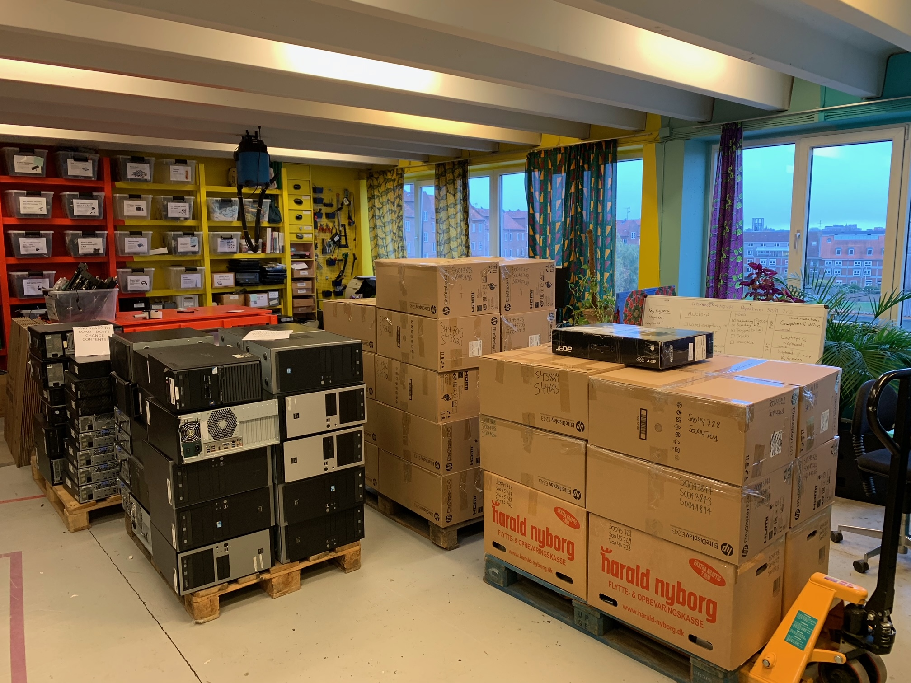 ] ??? --- class: fancy-headline-slide, fancy-headline-slide3, no-border-img, slide-columns, hide-counter .left-column[ # Praktisk<br>V√¶rksted opbygget over 10 √•r ] .right-column[ 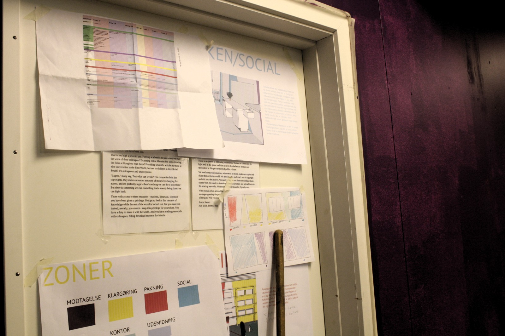 ] ??? --- class: fancy-headline-slide, fancy-headline-slide3, no-border-img, slide-columns, hide-counter .left-column[ # Praktisk<br>Klisterm√¶rker ] .right-column[ <div style=" background: url(fair4.jpeg); height: 100%;"><br></div> ] ??? --- class: fancy-headline-slide, fancy-headline-slide3, no-border-img, slide-columns, hide-counter .left-column[ # Praktisk<br>fra 1 til mange ] .right-column[ 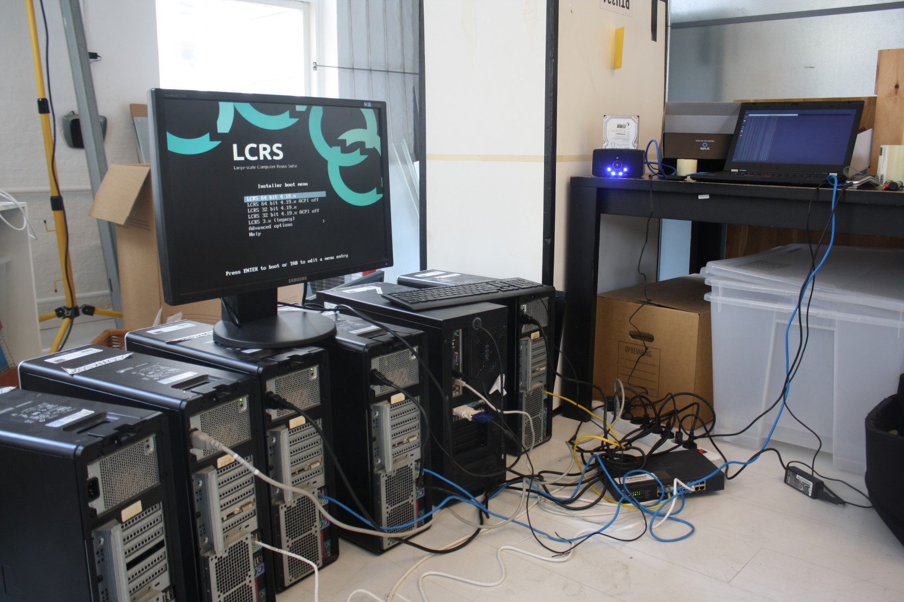 ] ??? --- class: fancy-headline-slide, fancy-headline-slide3, no-border-img, slide-columns, hide-counter .left-column[ # Praktisk<br>fra 1 til mange ] .right-column[ 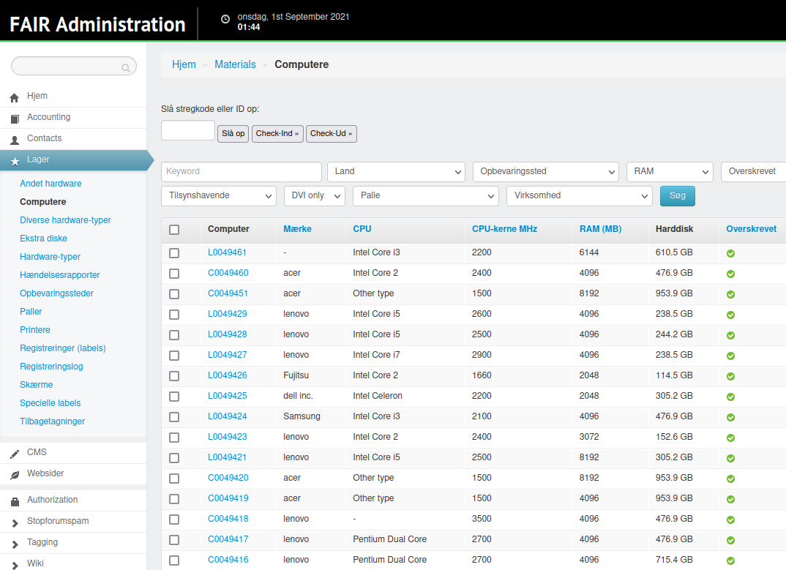 ] ??? --- class: fancy-headline-slide, fancy-headline-slide3, no-border-img, slide-columns, hide-counter .left-column[ # Praktisk<br>fra 1 til mange ] .right-column[ 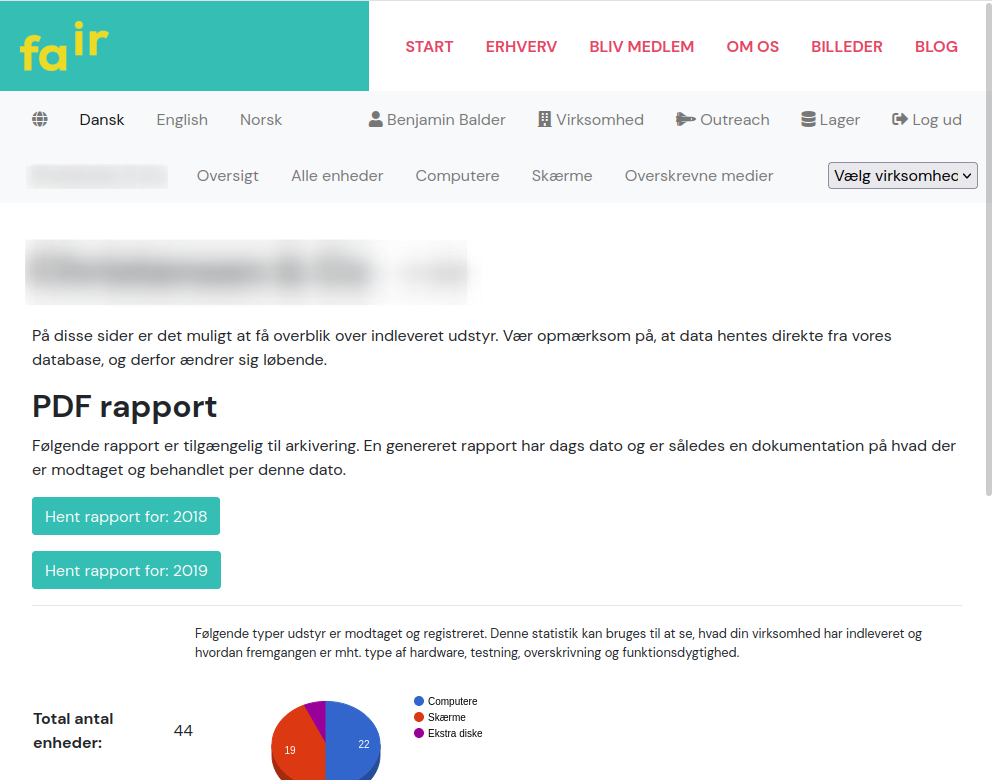 ] ??? --- class: fancy-headline-slide, fancy-headline-slide3, no-border-img, slide-columns, hide-counter .left-column[ # Praktisk<br>fra 1 til mange ] .right-column[ # Genbrug med omtanke ## Brug din tid fornufigt: Genbrug s√• meget som muligt ## ...men genbrug ikke for at genbruge ## Sympati med fremtidig ejer ## Fjern alle spor fra tidligere ejer ‚ÄúTo recommend thrift to the poor is both grotesque and insulting. It is like advising a man who is starving to eat less.‚Äù ‚Äï Oscar Wilde, The Soul of Man Under Socialism ] ??? Regel om at bruge max. 15 minutter p√• at fikse noget Genbrug ikke bare for at genbruge.. modtageren skal have gl√¶de af det Husk at fjerne alle spor fra tidligere ejer. Det er ufedt at g√• i andres gamle sko. * Don't spend all the time being grateful. Avoid talking purely about donations and charity. People often diminish issues that are really important: Like oh, it occationally reboots [so I can't use it] ‚ÄúTo recommend thrift to the poor is both grotesque and insulting. It is like advising a man who is starving to eat less.‚Äù ‚Äï Oscar Wilde, The Soul of Man Under Socialism Shame on us for not planning technology such that our computers can be useful for a decade. --- class: fancy-headline-slide, fancy-headline-slide3, no-border-img, slide-columns, hide-counter .left-column[ # Praktisk<br>fra 1 til mange ] .right-column[ # Kriterier for genbrug B√•de objektive og subjektive: * Automatisk via LCRS og logistik-database * Et skøn fra frivillige Sp√¶ndende at udforske: * Hvorn√•r skal batterier fjernes? * Hvorn√•r er kosmetiske skader kritiske? * Hvorn√•r skal man opgradere? * Hvad er for gammelt (tidsm√¶ssigt)? * CPU specs * Hvor mange reservedele kan man opbevare? Hvad skal udtages? * SMART data - disk health * Apple, tablets mv.: Tilg√¶ngelighed af fremtidig reparation og brugsscenarier ] ??? You might not have exact answers to these. Track and comment in your database. --- class: fancy-headline-slide, fancy-headline-slide3, no-border-img, slide-columns, hide-counter .left-column[ # Praktisk<br>fra 1 til mange ] .right-column[ # Udfordringerne for FAIR * Mangler et v√¶rksted i 2022 * Outreach til virksomheder * Medlemmer: Man kan melde sig ind online * Flere frivillige * Afhentninger * Software-udvikling * Projekt-udvikling * Kommunikation * Offline-teknologi * Forskning og viden ] --- class: fancy-headline-slide, fancy-headline-slide4, no-border-img, slide-columns, hide-counter .left-column[ # Ji≈ô√≠ Krejƒç√≠<br>Paranda.ee ] .right-column[ # Repair community in Estonia * [Paranda.ee (website)](https://paranda.ee/en/) * [Youtube channel](https://www.youtube.com/channel/UC57jDezGTi4d0BTglnGRdGQ) 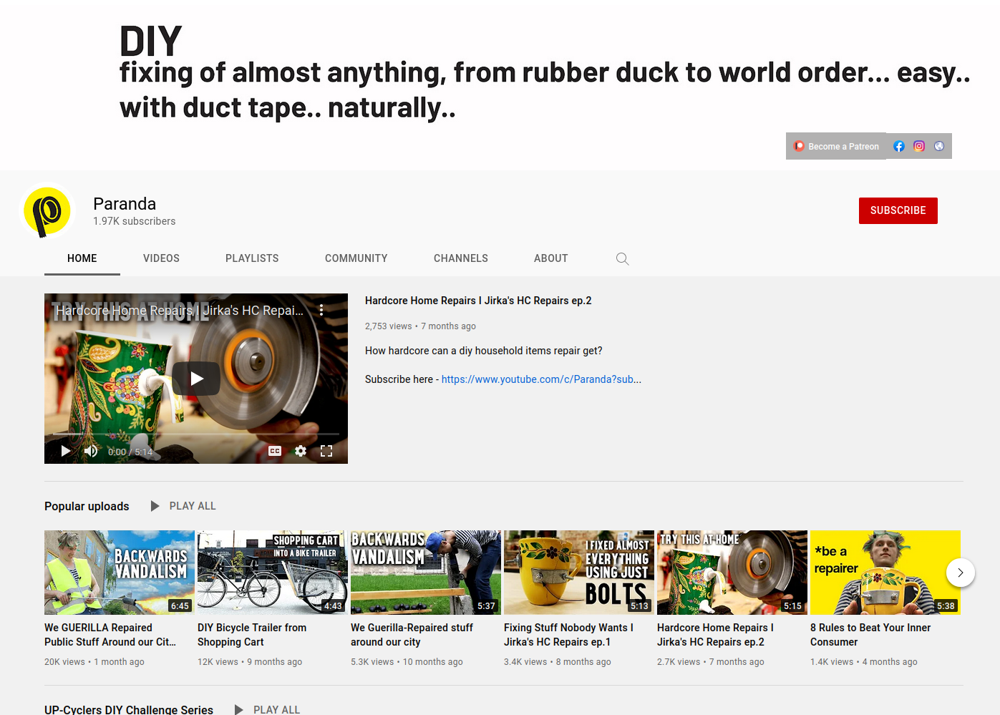 ] ??? Questions: We have too little time, sorry! What is Paranda.ee in a few short words? You are showing a fun and creative side of repairing - what happens when you share this as videos on youtube, why do you do it? You are repairing a lot of stuff, do you meet IT people? --- class: fancy-headline-slide, fancy-headline-slide4, no-border-img, slide-columns, hide-counter .left-column[ # Janet Gunter<br>The Restart Project ] .right-column[ # The Restart Project ## Fix a laptop, shake the system. The Restart Project helps people learn how to repair their broken electronics, and rethink how they consume them in the first place. [https://therestartproject.org/](https://therestartproject.org/) ## [September 2nd: What companies hide: the high carbon impact of making our electronics](https://ti.to/the-restart-project/what-companies-hide-the-high-carbon-impact-of-making-electronics)  ] ??? Questions: We have too little time, sorry! What is Paranda.ee in a few short words? You are showing a fun and creative side of repairing - what happens when you share this as videos on youtube, why do you do it? You are repairing a lot of stuff, do you meet IT people? --- class: fancy-headline-slide, fancy-headline-slide1, slide-columns, hide-counter .left-column[ # Afslutning ] .right-column[ # Kommende arrangementer * September 2: [Webinar, The Restart Project](https://ti.to/the-restart-project/what-companies-hide-the-high-carbon-impact-of-making-electronics) * October 16: [Repair Day 2021](https://openrepair.org/international-repair-day/) * November 13: [Green_IT (PROSA Midtvejsmøde, annual PROSA conference)](https://www.prosa.dk/green-it/forside/) # 10 minutters pause # H√¶ng-ud p√• Teams ] ??? Bem√¶rk at vi ikke har nogen pauser, men vi har h√¶ng-ud bagefter